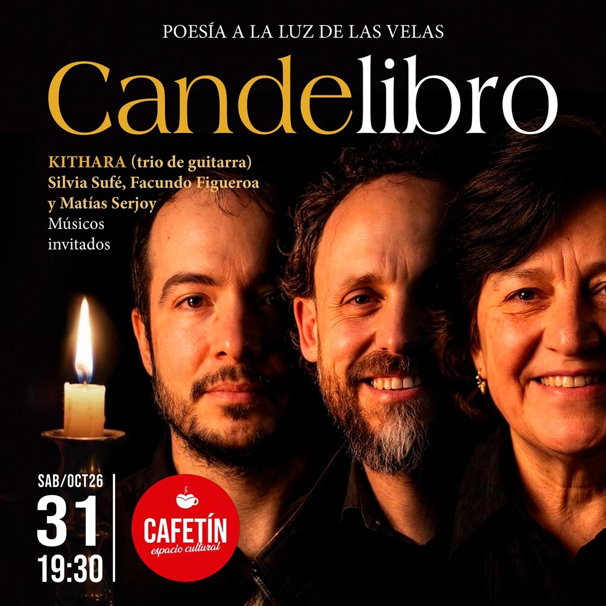

Candelibro celebra su sexta edición con poesía a la luz de las velas
Hoy, sábado 31 de octubre, a las 19:30, el encuentro mensual reúne a cinco poetas y al trío de guitarras Kithara en Cafetín Espacio Cultural, en barrio Cofico.

Candelibro llega hoy a su sexta edición, a las 19:30, en Cafetín Espacio Cultural, Avellaneda 1423, barrio Cofico. Se trata de un encuentro mensual para celebrar la poesía bajo la luz cálida y tenue de las velas, con música instrumental en vivo. “¡Queremos que la ‘palabra’ sea la protagonista!”, anuncian sus organizadores.
En esta edición leerán sus poemas Aura Re, Pablo Llarens, Caro Leiva, Dardo Passadore e Irma Droz. La música estará a cargo de Kithara, trío de guitarras integrado por Silvia Sufé, Facundo Figueroa y Matías Serjoy.
Kithara nació en 2005, cuando Silvia Sufé, docente del Conservatorio Félix T. Garzón, convocó a guitarristas egresados para hacer música de cámara. Hoy, renovado como trío, interpreta música clásica universal y música de raíz folklórica con una impronta propia.

La entrada es libre, con colaboración voluntaria para los músicos. Es importante reservar con anticipación por WhatsApp al 351 211 8650.
Dónde y cuándo: hoy, sábado 31 de octubre, 19:30 · Cafetín Espacio Cultural, Avellaneda 1423, Cofico · Entrada libre con colaboración voluntaria · Reservas: 351 211 8650.